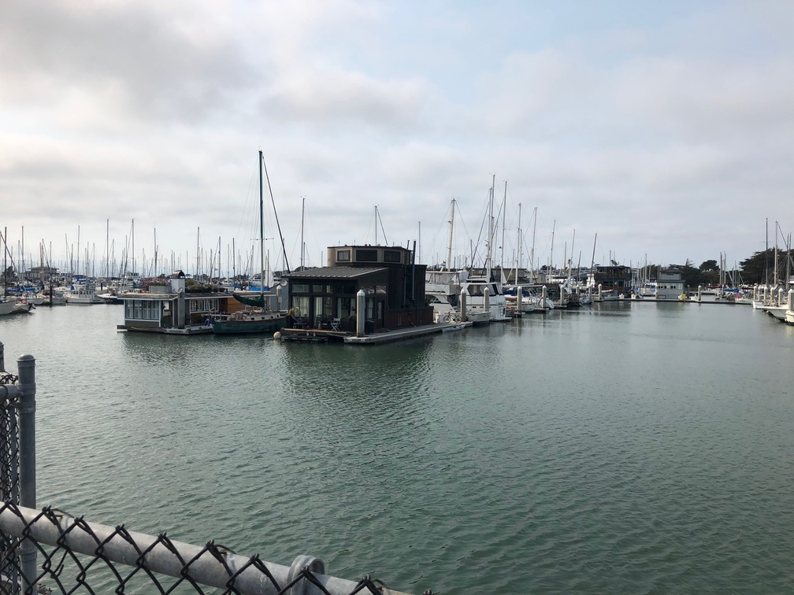

In order to combine multiple images into a "mosaic", sometimes the camera angle will result in a different planar surface for the images. In order to flatten the images against the same plane, a projective transform was applied to one of the images.
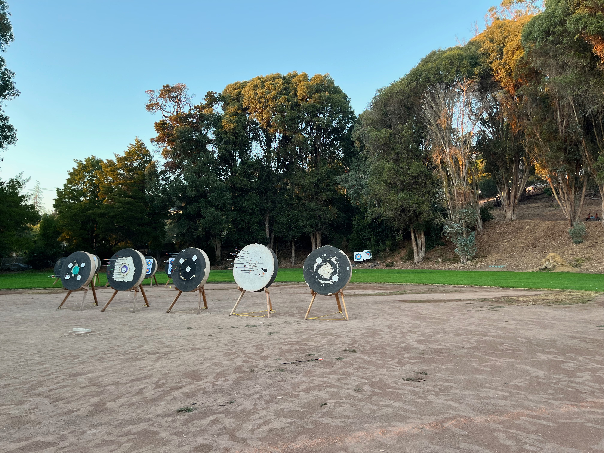
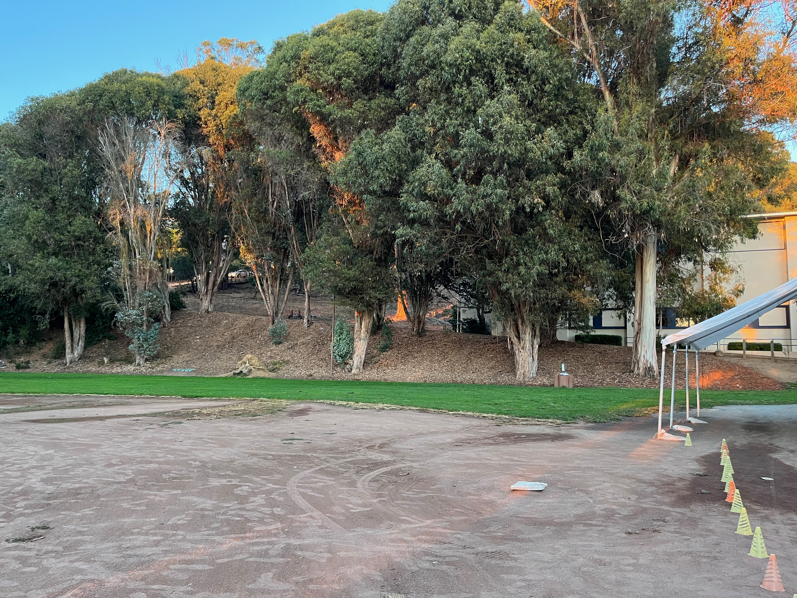
The projective transform(Homography) matrix, H, is a 3x3 matrix. In order to recover each parameter of the matrix, 10 correspondance points were chosen between both images, which created an overdetermined system of linear equations. Least squares was then used to recover the transformation parameters, and the image was warped by applying this matrix.
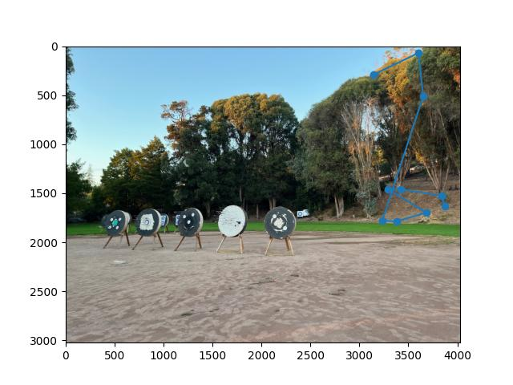
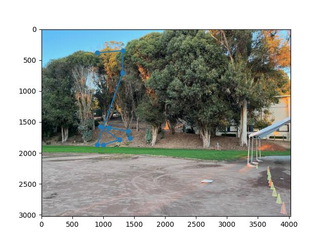
I then used the same warp process as in project 3- first creating a mask of the new point locations and then interpolating the pixel values.
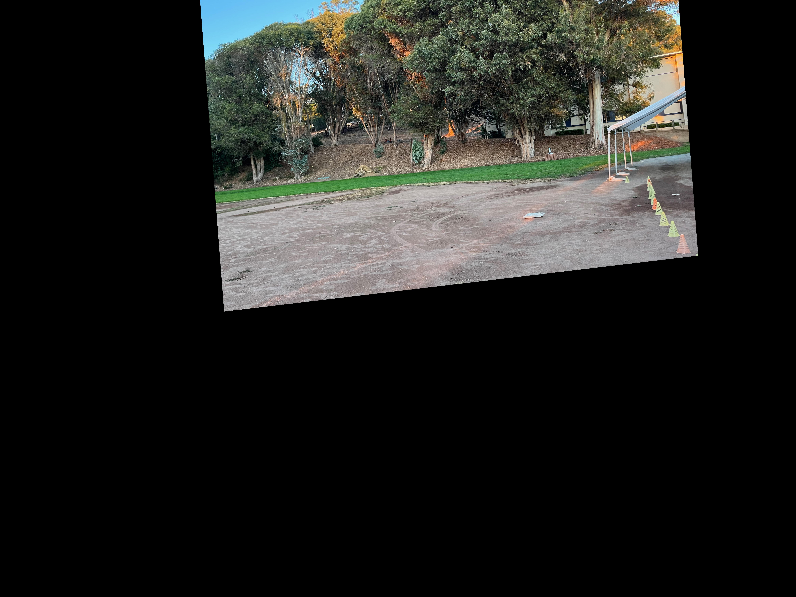
After warping the image, I used the Laplacian stack blending technique from project 2 to create a mosaic of the two images.

Here are some more mosaics!

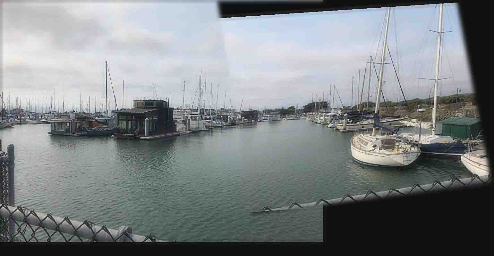


Using the same homography warping technique, you can take a non-parallel surface on an image and turn it into a flat image.
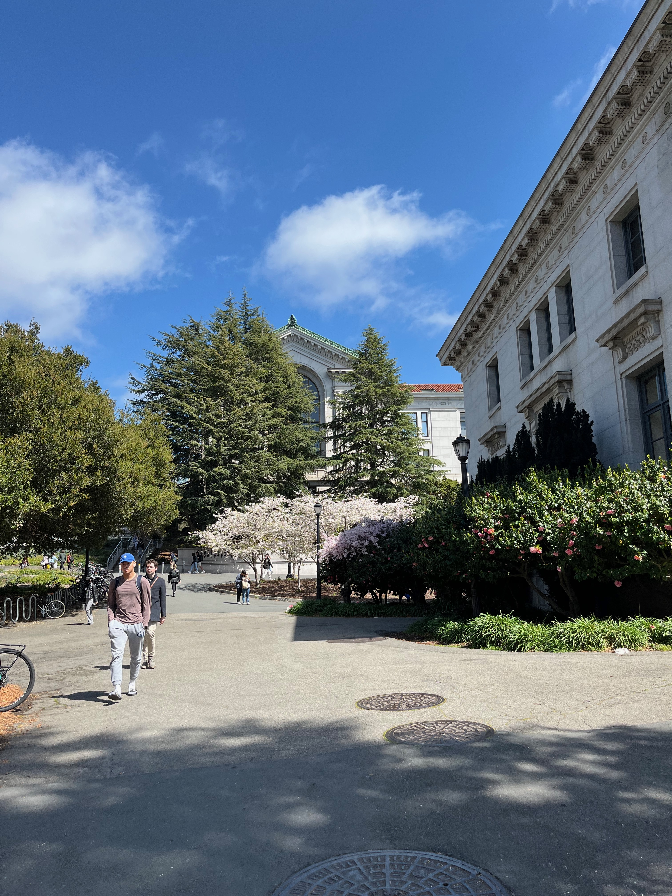
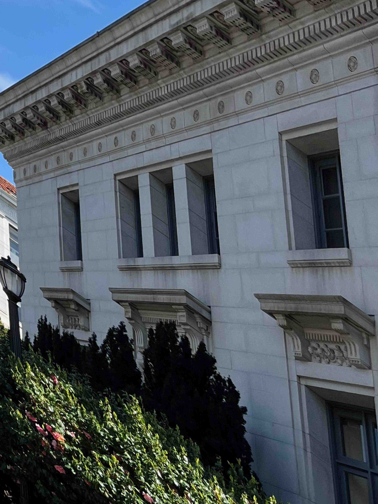
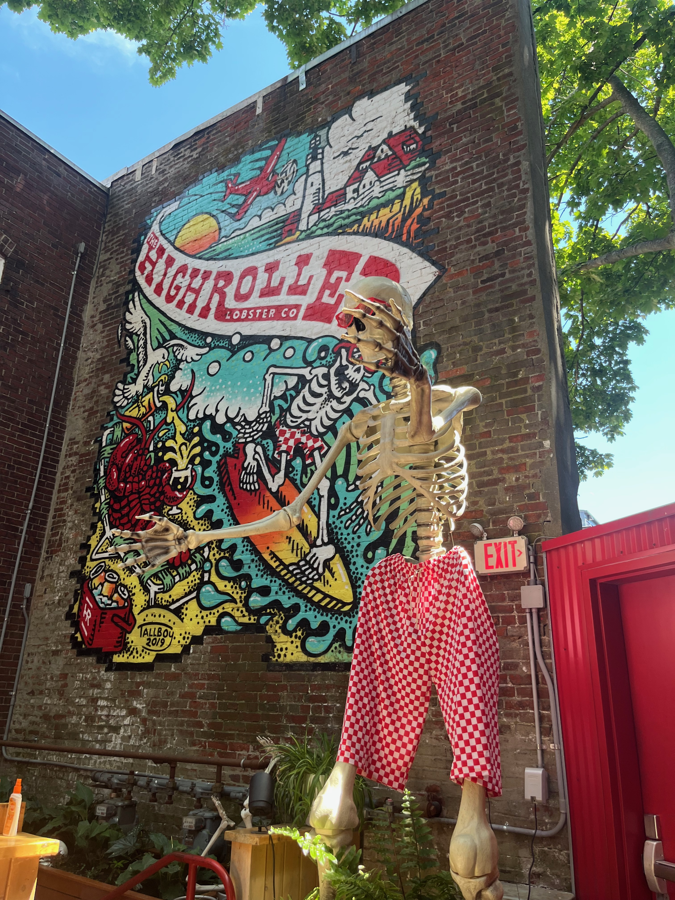
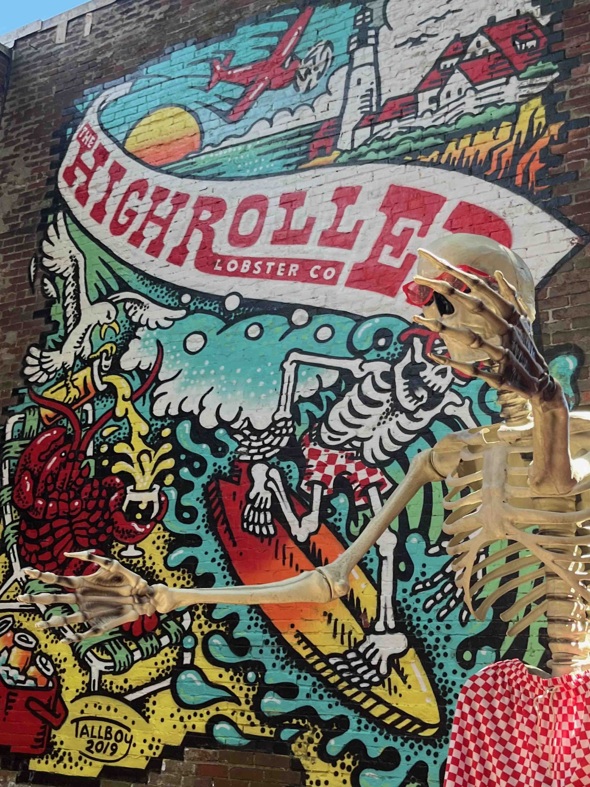
Even with very narrow (nearly perpendicular) planes like the ones shown in lecture, you can still recover a homography and project it onto a new plane while preserving the old patterns. I thought that when you enlarged a thin image like that, most of the information would be lost, but through interpolation, you can recover nearly all of the missing information!